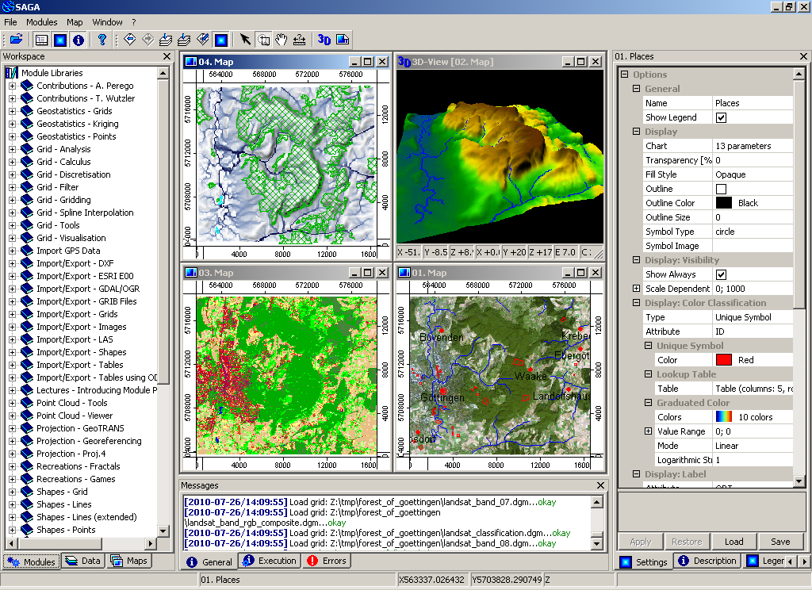

SAGA¶
Desktop GIS¶
SAGA (System for Automated Geoscientific Analyses) è un geographic information system (GIS) open source per l’elaborazione e l’analisi di dati territoriali. Comprende un gran numero di moduli per l’analisi di dati vettoriali (punti, linee e poligoni), tabellari, a griglia e immagini. Fra gli altri, il pacchetto include moduli per la geostatistica, la classificazione di immagini, le proiezioni, la simulazione di processi dinamici (idrologia, evoluzione del paesaggio) e analisi del terreno. Le varie funzioni sono accessibili tramite interfaccia grafica, linea di comando o usanto una API in C++.
SAGA è stato sviluppato a partire dal 2001, e il nucleo dello sviluppo di SAGA è presso l’istituto di geografia all’università di Amburgo, con contributi da una comunità crescente a livello mondiale.
{kind=link}
Caratteristiche Principali¶
Accesso a un gran numero di moduli scientifici tramite interfaccia grafica o linea di comando
Importazione ed esportazione in vari formati di file
Riproiezione/ricampionamento di dati
Manipolazione di dati vettoriali (fusione/intersezione/attributi)
Manipolazione di nuvole di punti da dati LIDAR
Dati raster: interpolazione, analisi di costo,…
Analisi di immagini: filtri, rilevamento dei contorni, analisi cluster, segmentazione
Analisi di modelli digitali del terreno: generazione di indici geomorfometrici, reti, profili, curve di livello,…
Geostatistica: moduli per adattamento di variogrammi e kriging
Interfaccia utente veloce per la gestione e la visualizzazione dei dati
Visualizzazione 3D
API in C++ molto semplice per la creazione di nuovi moduli
Creazione di script con la linea di comando, binding per Python
Si può accedere a SAGA dal linguaggio statistico R tramite il modulo RSAGA
Dettagli¶
Sito web: http://www.saga-gis.org
Licenza: LGPL v2.1 (api); GPLv2 (interfaccia grafica e moduli)
Versione Software: 7.3.0
Piattaforme Supportate: Windows, Linux, FreeBSD
Interfacce API: C++, Python, R
Supporto: http://www.saga-gis.org